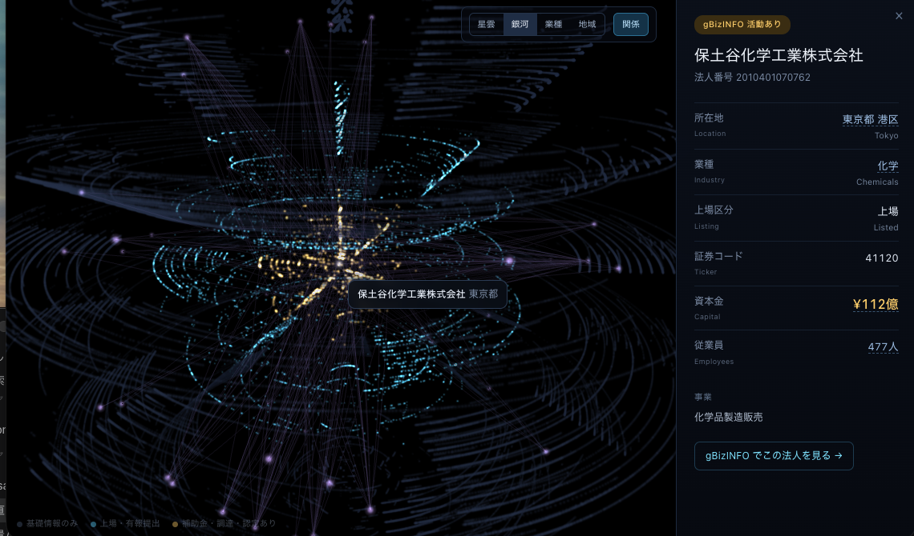
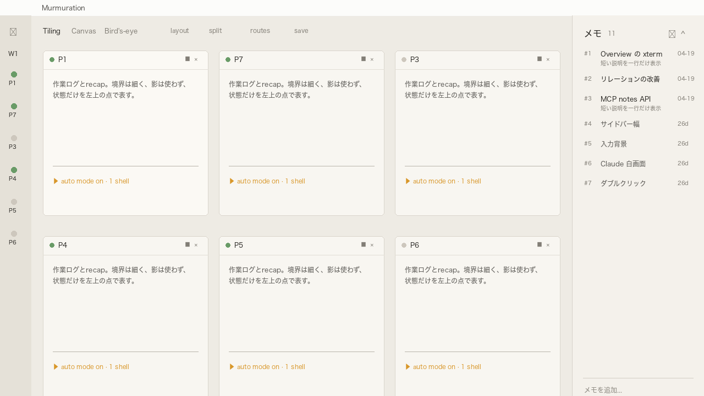
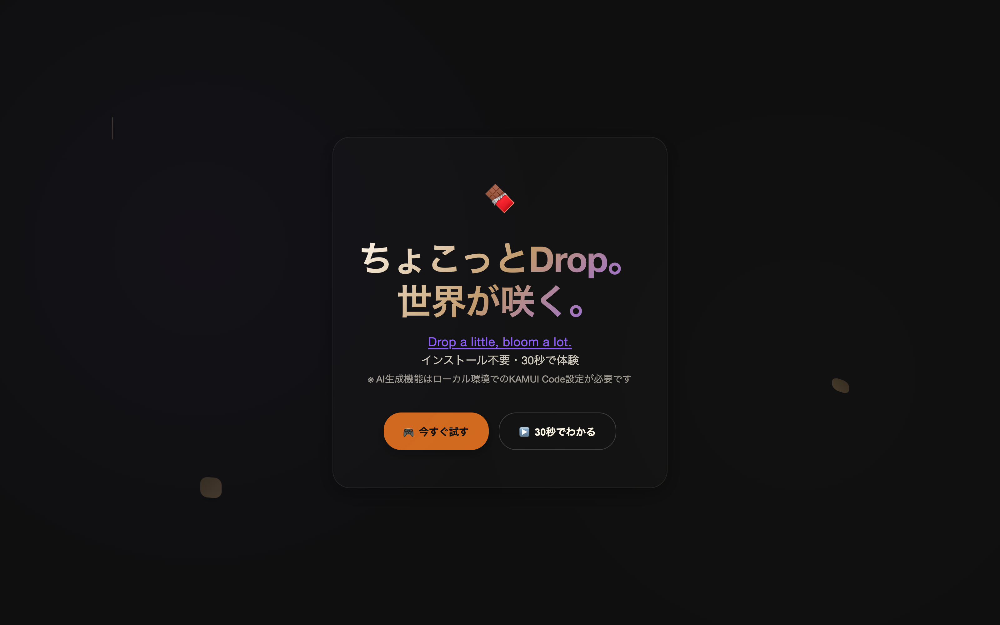

BtoB SaaS の CS・営業・マーケに散らばったデータを統合し、現場が「その場で決められる」 意思決定の仕組み・シミュレーター・AI 業務自動化を、設計から実装・運用まで一人で通します。 AI は「ツール利用」ではなく業務フロー再構築のレベルで使います。 — 決められない場所に、決める材料を作って置く人。
BtoB SaaS で CS・営業・マーケを横断する意思決定の仕組み（可視化・シミュレーター等）を設計・構築。現場の確認業務から経営の戦略立案までに組み込まれ、全社で運用される状態に到達。
漠然とした不安で止まっていた価格検討を、シミュレーターで「その場で決められる」状態に。会議が即決で終わるようになった。
顧客の稟議を通すための受注支援ツールを、設計思想から構築。営業が「前に出る」ための材料を用意。
社内の AI 活用の中心人物として認識される立ち位置に。AI × RevOps 領域の外部専門家から「最先端」と評価、複数社へのレポート説明でも高評価。

政府オープンデータ（gBizINFO 等）を統合し、企業の関係性・業種・地域を 3D 空間で探索できるツール。業務で作る意思決定の仕組みと同じ「データ → 意味 → 可視化」を、顧客データを使わず公開データで形にしたデモです。

複数の AI エージェントが群れ（murmuration）のように動く様子を、タイリング GUI で一目に。複雑で見えない情報を「判断できる形」に可視化する、意思決定支援のツール版。

テキストや音声で、Three.js の 3D シーンに即座にオブジェクトを生成・配置するブラウザツール。AI を UI に溶かし込む実装。
音が映像を駆動する、リアルタイム生成のビジュアル。データを意味に変えるのと同じ手で、美しさも設計できるという証明。
業務委託・副業のご相談、お気軽に。データ × AI × 可視化の領域で、設計から実装・運用まで。リモート / 平日夜・土日で稼働できます。